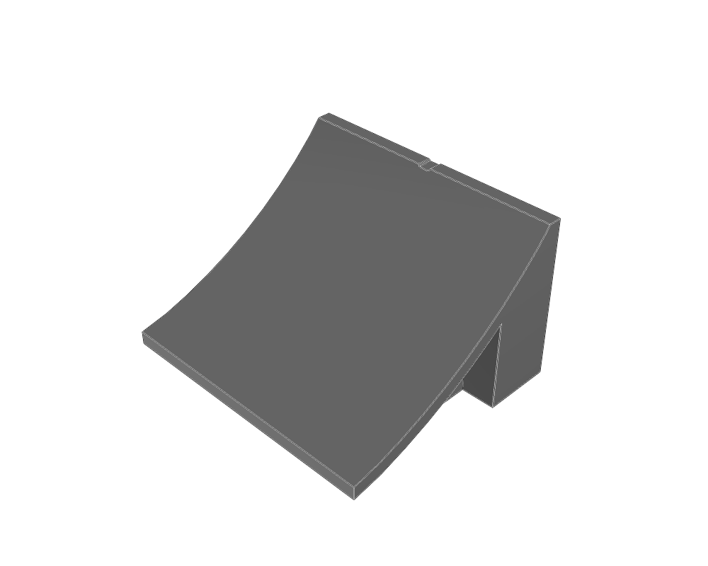
Slope Concave 8 x 8 x 4 with 1 x 6 Plate
7553875538.dat · 160 × 96 × 160 LDU
Inspect sourceActual library geometry. Each view is fitted independently: compare the listed dimensions, not image size. Bounds include studs and decoration; they are not stacking heights.

7553875538.dat · 160 × 96 × 160 LDU
Inspect source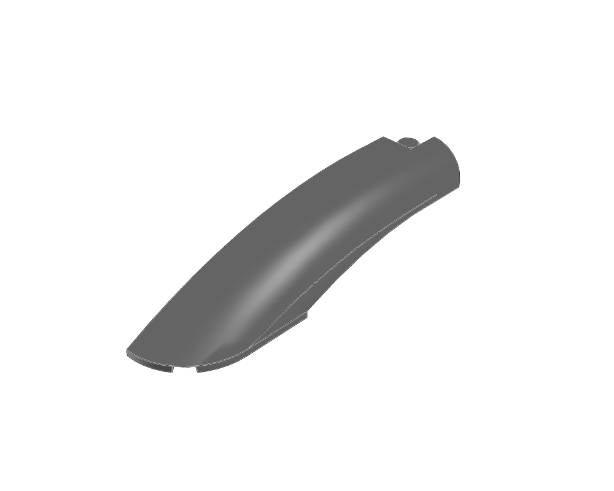
7718077180.dat · 40 × 48 × 200 LDU
Inspect source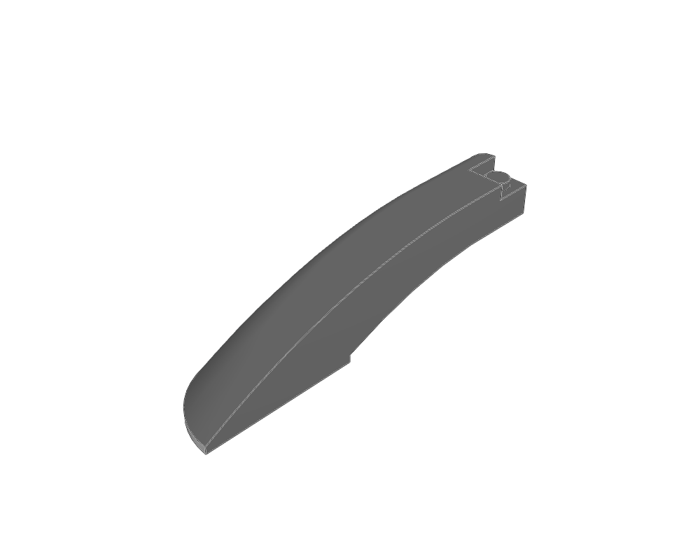
7718277182.dat · 40 × 48 × 200 LDU
Inspect source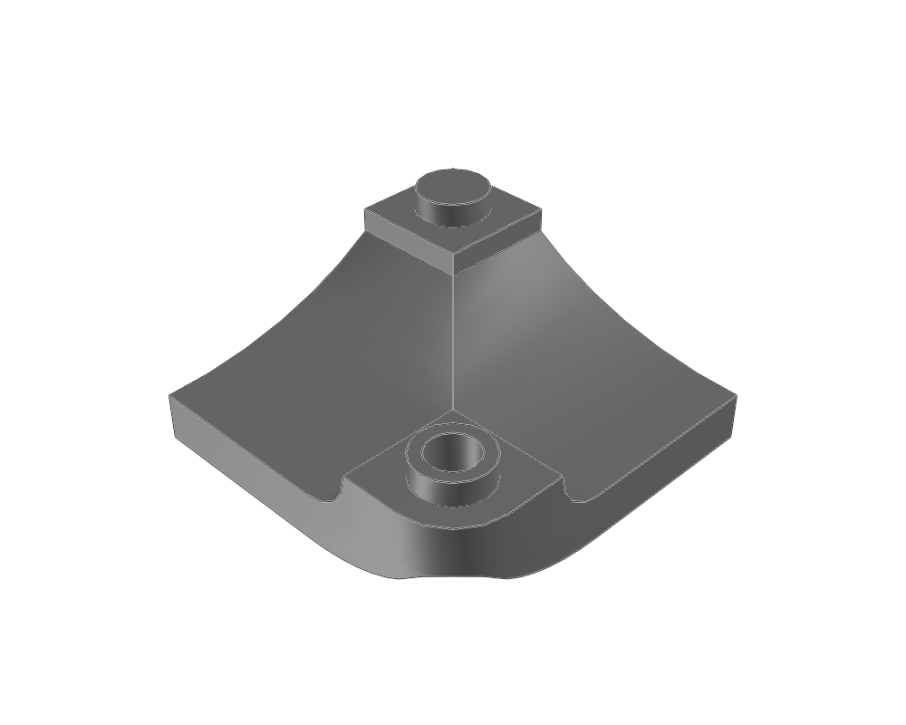
7368273682.dat · 60 × 28 × 60 LDU
Inspect source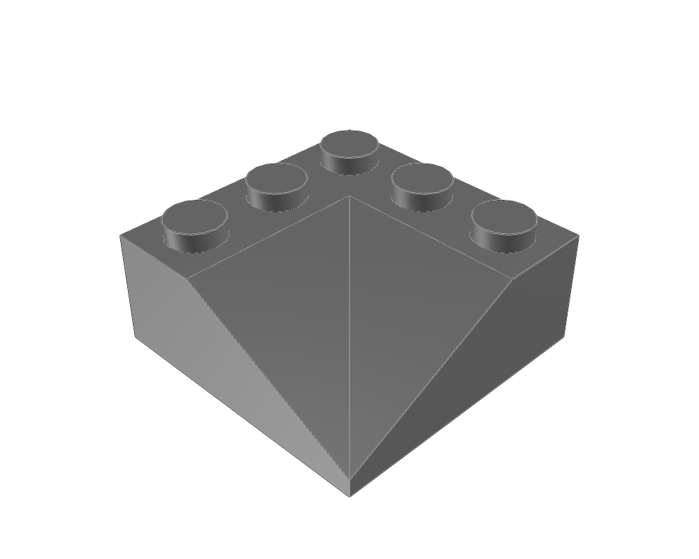
9930199301.dat · 60 × 28 × 60 LDU
Inspect source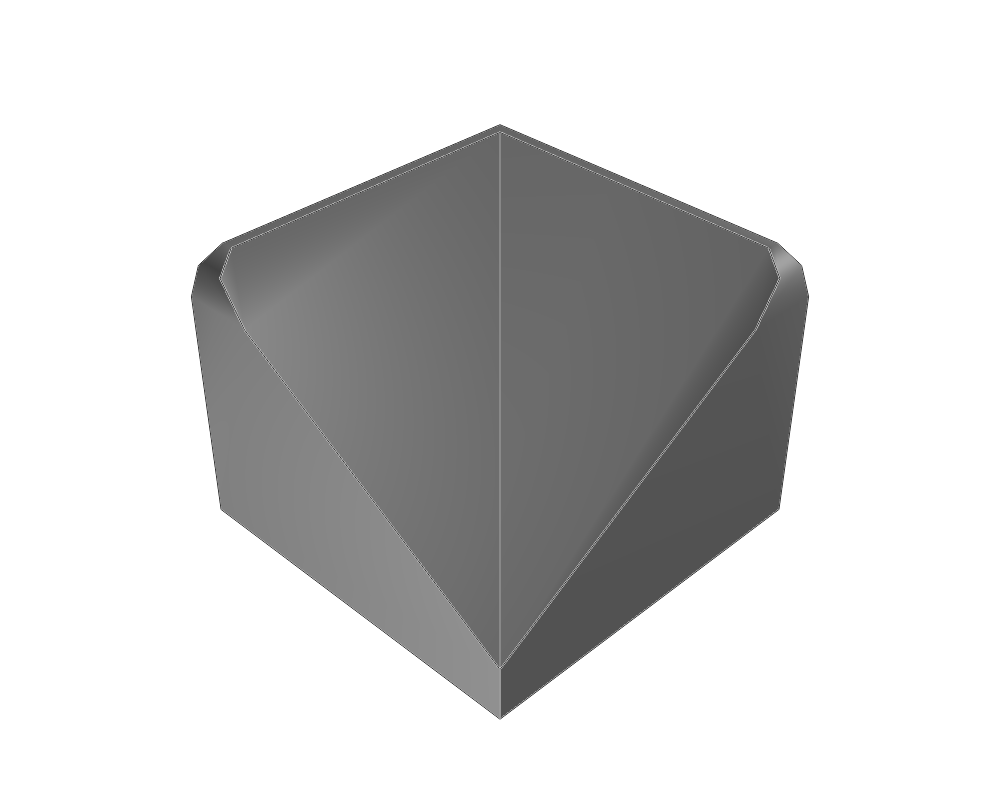
78277827.dat · 20 × 15.6 × 20 LDU
Inspect source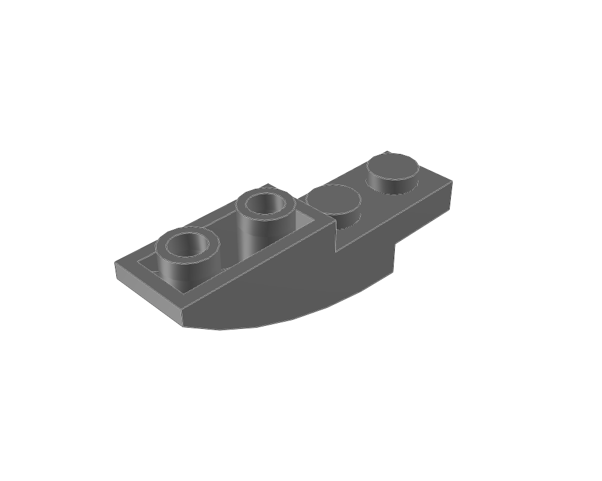
1354713547.dat · 20 × 28 × 80.0025 LDU
Inspect source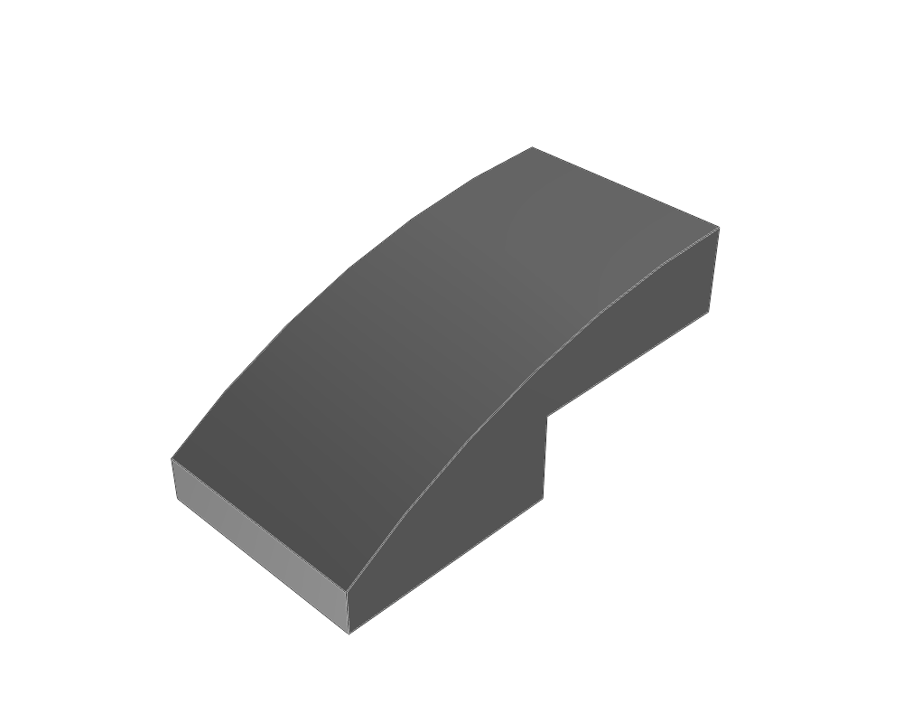
1147711477.dat · 20 × 16.0001 × 40 LDU
Inspect source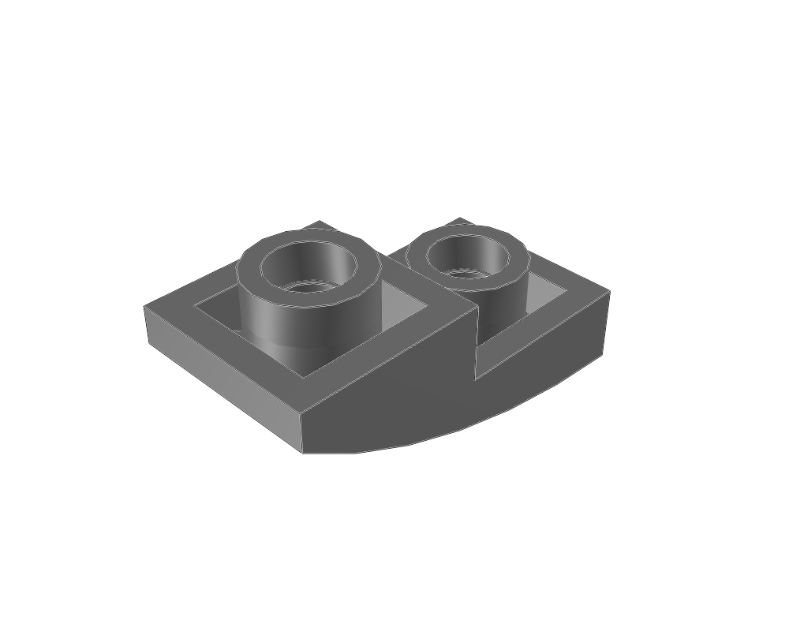
2420124201.dat · 20 × 19.9441 × 40.0006 LDU
Inspect source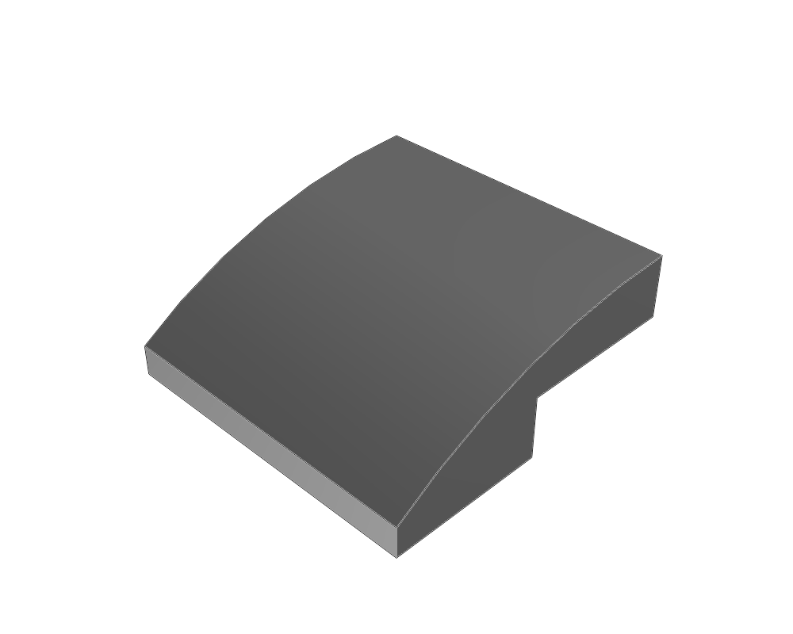
1506815068.dat · 40 × 16.0001 × 40 LDU
Inspect source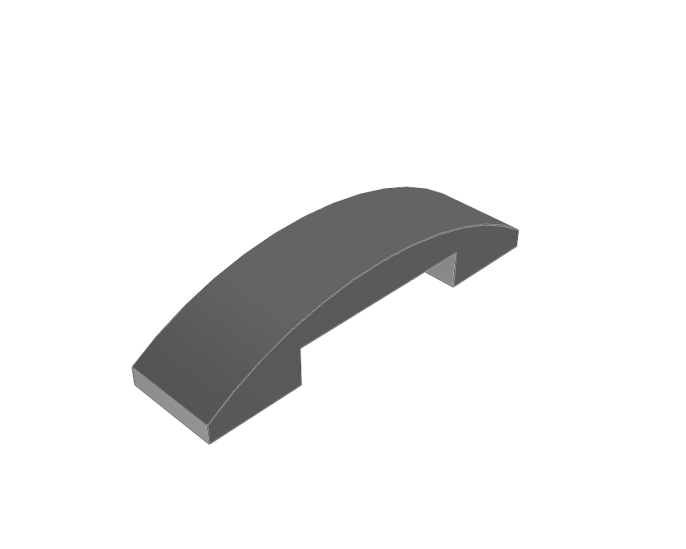
9327393273.dat · 20 × 16.0002 × 80 LDU
Inspect source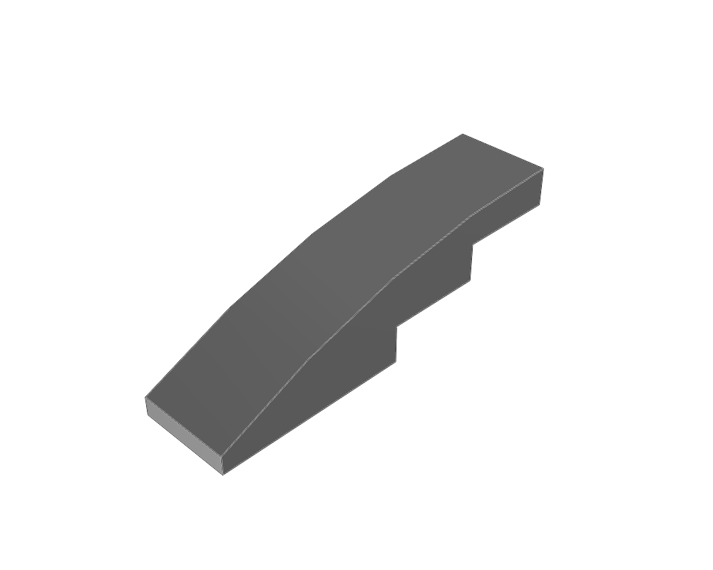
6167861678.dat · 20 × 24 × 80 LDU
Inspect source